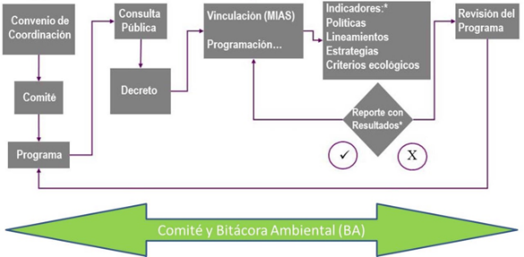

Es el instrumento de política ambiental cuyo objeto es regular o inducir el uso del suelo y las actividades productivas, con el fin de lograr la protección del medio ambiente y la preservación y el aprovechamiento sustentable de los recursos naturales, a partir del análisis de las tendencias de deterioro y las potencialidades de aprovechamiento de los mismos. Fuente: Fracción recorrida DOF 28-01-2011
El ordenamiento ecológico es un proceso de planeación adaptativo, participativo y transparente que
contempla una serie de fases que incluyen la formulación, expedición, ejecución, evaluación y, en su
caso, modificación del programa.

Fuente: SEMARNAT Ordenamiento Ecológico del Territorio.
La Agenda Ambiental es un proceso participativo que tiene por objetivo identificar los principales problemas del área del ordenamiento ecológico que dieron origen al Programa de Ordenamiento Ecológico. Es un ejercicio participativo que recoge las preocupaciones de los sectores involucrados en la región, pero también, con base en información identificada en otros instrumentos de planeación territorial.
La bitácora ambiental es una herramienta que contiene el registro público de los avances del proceso de ordenamiento ecológico, con la finalidad de:
Fuente: SEMARNAT Bitácoras Ambientales de Ordenamientos Ecológicos.
El Comité es un órgano consultivo integrado por autoridades federales y estatales con la participación municipal, social y ciudadana efectiva, inclusiva, equilibrada y representativa, en el que intervienen personas, organizaciones, grupos e instituciones de los sectores público, social y privado, que tiene por objeto apoyar el proceso del ordenamiento ecológico del territorio en el Estado de Puebla, buscar la congruencia de planes, programas y acciones sectoriales en el área de estudio. Fuente: Reglamento Interior del Comité de Ordenamiento Ecológico del Programa de Ordenamiento Ecológico del Estado de Puebla.
Unidad de Gestión Ambiental, abreviado como UGA, unidad del paisaje definida por la geomorfología y características sociales, demográficas e históricas del territorio, a la que se asignan determinados lineamientos y estrategias ecológicas. Fuente: Reglamento Interior del Comité de Ordenamiento Ecológico del Programa de Ordenamiento Ecológico del Estado de Puebla.
La Consulta Pública es un proceso participativo que permite a la ciudadanía y diversos actores sociales de diferentes sectores (academia, sociedad civil organizada, sectores productivos, población indígena, etc.) revisar la propuesta de Ordenamiento Ecológico y aportar opiniones a la planificación del uso del territorio y los recursos naturales. Este proceso incluye la divulgación de la propuesta, la recepción de comentarios y sugerencias, y su posible modificación en base a estas aportaciones. Una vez que esté concluida la fase de Propuesta del Modelo de Ordenamiento Ecológico del estado de Puebla, se formulará la convocatoria al Proceso de Consulta Pública.
Al consultar la sección de Consulta Pública (en proceso), se podrán encontrar las memorias de los talleres, listas de asistencia, opiniones y sugerencias sobre la Propuesta de Ordenamiento Ecológico del Estado de Puebla, las cuales serán analizadas y en su caso, integradas al Modelo de Ordenamiento Ecológico. Fuente: Reglamento Interior del Comité de Ordenamiento Ecológico del Programa de Ordenamiento Ecológico del Estado de Puebla.
El siguiente mapa presenta una perspectiva de las zonas socioeconómicas en que fue dividido el estado de Puebla para realizar el Programa de Ordenamiento Ecológico (POE). Los foros de la Consulta Pública se realizaron en cada una de estas zonas. Para consultar la convocatoria de la Consulta Pública da click aquí.
Al pasar el cursor sobre cada polígono se muestran las regiones socioeconómicas y la cantidad de unidades de gestión ambiental (UGA) que están comprendidas dentro de cada zona. Al hacer click sobre cada polígono en el mapa, se abrirá una nueva ventana donde se muestra la memoria fotográfica de los foros de Consulta Pública.